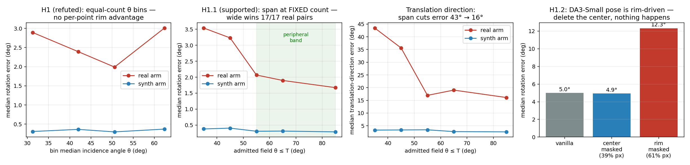
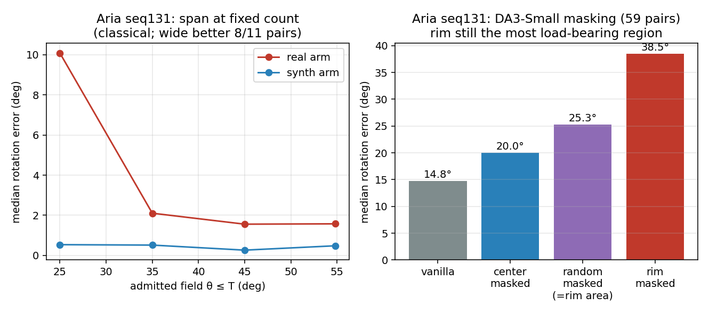
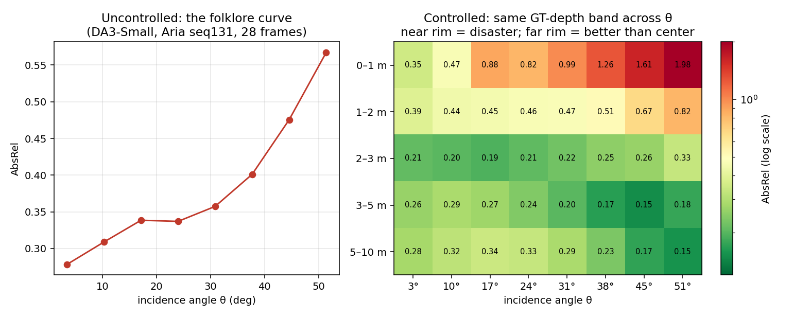
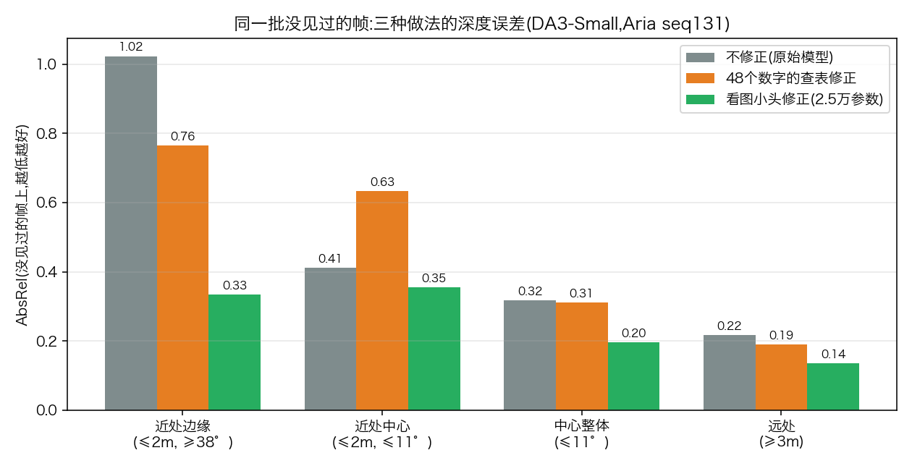
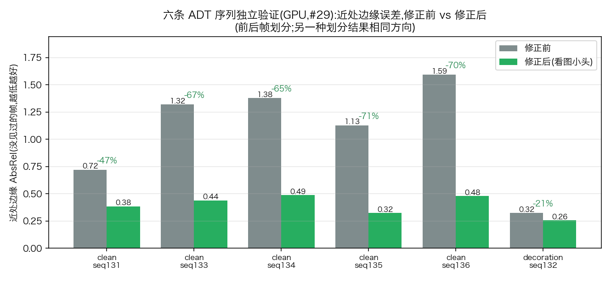
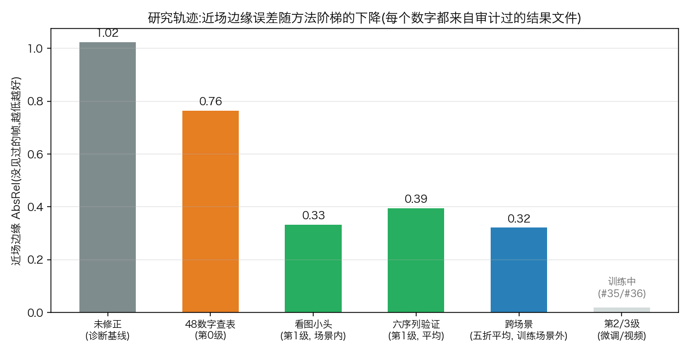
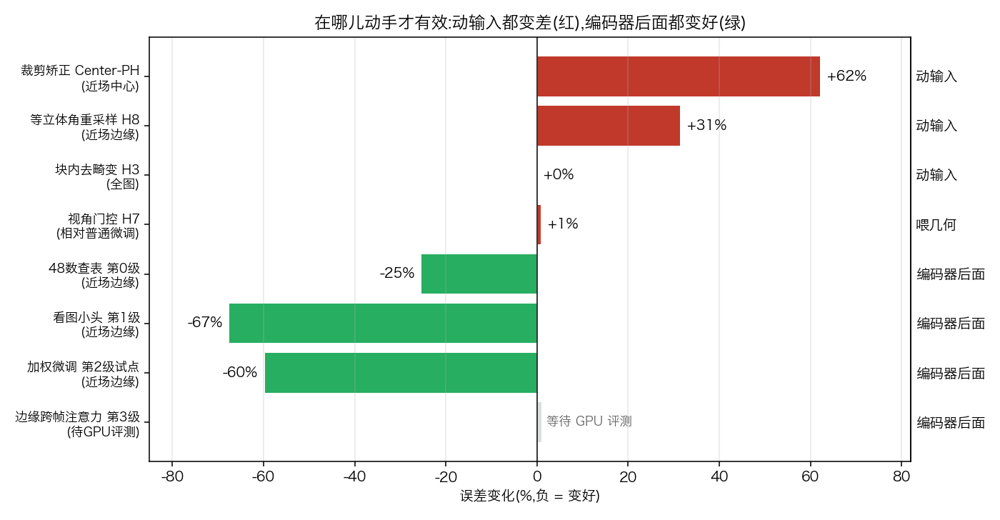
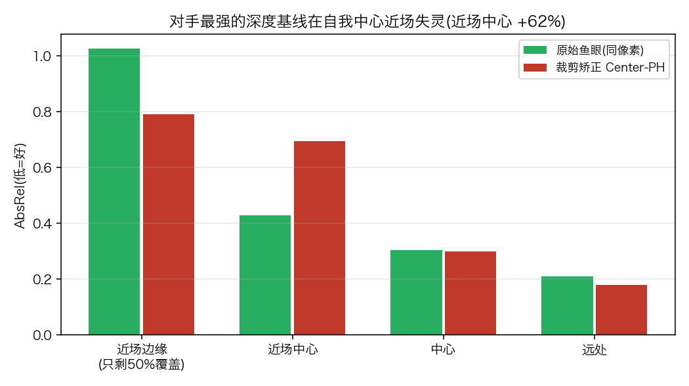
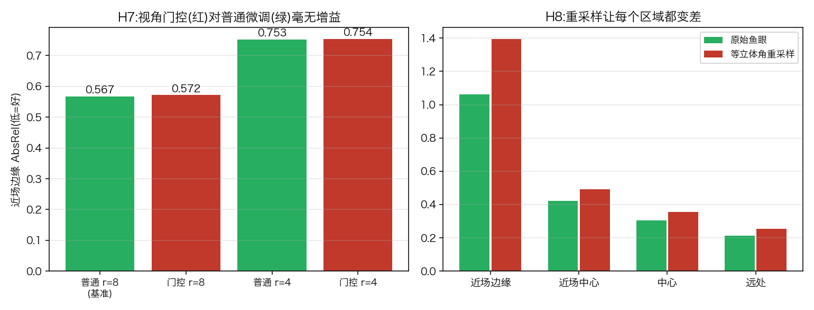
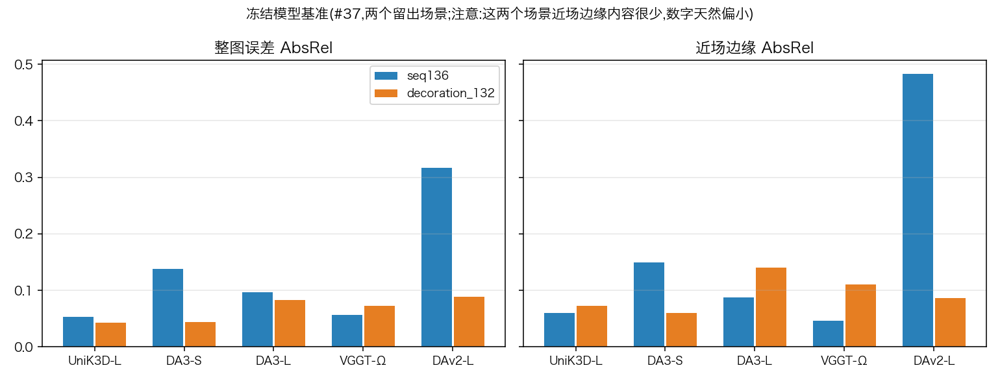

最近更新:2026-08-19 下午 · GPU 四单全部交付!训练完成、基准行到手;还差最后一步评测(已催)
本页导读:①研究问题 → ①·五 我们提出的方法和新颖点(图解) → ②重要发现(白话) → ②·六 最新结果图集(成功与失败) → ③进度看板(谁在干什么、卡在哪) → ④协作方式 ⑤小词典。
Aria 眼镜的鱼眼相机视野很宽(约110°),但现有的深度估计大模型都是在普通相机图片上训练的: 画面边缘(视野外圈)的深度估计很差。我们想用很小的改动(不重训大模型)让边缘变好, 同时不把画面中心弄坏。你定的四个创新方向: ① 边缘变好、中心不变差;② 让模型更聪明地处理畸变(不同位置畸变程度不同,处理方式也该不同); ③ 边缘虽然深度差,但可能对"多帧对齐/定位"很有用,要把这个价值利用起来;④ 处理好画面里的手(第一视角视频总有手在动)。
论文的方法是一个三级阶梯,每一级都由一个测量结果"指定"出来,而不是拍脑袋。三级都遵守同一条铁律(见②·六的规律图):不动输入、不动骨干的边缘特征,在编码器后面动手。
依据:量尺压缩是"多对一",只看输出修不好(第0级查表的失败),必须看图像特征。已验证:六序列 −21~−75%,跨场景 −74~−78%,姿态零风险(结构上碰不到)。
新颖点:三个损失都来自我们的测量——加权图=第9号实验的压缩场;特征保真=「姿态靠边缘」的发现;跨帧项=「融合红利不给边缘」的发现。试点:所有区域改善,近场边缘 −60%。等 GPU 评测出正式成绩。
新颖点:现有省算力方法(如 Spark3R)按"哪些块重要"删块;我们按镜头几何选块,而且是给边缘加跨帧信息而不是删——依据是「边缘为对齐出力、融合红利却只给中心」的测量。计算量是全 token 注意力的 0.48 倍。等 GPU 评测。
一句话总结新颖性:①先诊断(量出误差场和边缘的对齐价值),再把每一分参数花在诊断指向的地方——没有论文这么做;②架构上"边缘和中心区别对待"(边缘拿跨帧证据、中心保持原样)——没有论文这么做;③评测上同时报中心/边缘/姿态三轴+诚实的"适配数据"列——现有论文只报整图平均。四个失败路线(见下图)每一个都有实测的"为什么不行",这本身也是贡献。





图从左到右:①按"离画面中心的角度"把特征点分组、每组数量一样多时,各组算出的相机转动误差——没有哪一组特别厉害; ②同样数量的点,允许它们"铺得更开"(覆盖更大视野)时误差一路下降;③对"相机移动方向"的估计,视野铺开后误差从43°降到16°; ④把深度大模型输入图的中心/边缘分别抹掉后,它估计相机转动的误差变化。
这对方法设计意味着什么:要改进边缘深度的任何"小改动",都不能碰坏边缘的特征—— 因为模型的对齐能力就靠它们。所以我们后面做适配器(adapter)时,会选"初始为零、只在输出端修正"的路线, 并且每个版本都要同时汇报三个数:中心深度、边缘深度、姿态稳定性(以前的论文只报整图平均,这就是我们的差异点之一)。
方法一试点(探索性,帧级拆分):方向确认——没见过的帧上近场边缘 −60%,且所有区域都改善、无副作用,超参不用改。 方法二试点:方向未确认,但抓到了真问题——"相邻帧"隔 3.3 秒,跨帧注意力没有可用视差;而 GPU 训练即将踩同一个坑(均匀抽帧),已赶在开跑前改成连续密集窗口。另外把"中心不动"的措辞修正为 token 级(输出级靠测量)。查新:现有 foveated 方法都把算力给中心,我们给边缘且有测量依据——好写的对比。

核心指标(没见过的帧上的近场边缘误差)随方法阶梯的下降:未修正 1.02 → 查表 0.76 → 看图小头 0.33(六序列平均 0.39、跨场景 0.32)。第 2/3 级(微调、视频注意力)训练中。另:方法二效率已实测——边缘查询的计算量是全 token 的 0.48 倍。
规律图(本周最重要的一张):在哪儿动手才有效。红色=失败的尝试(全是动输入或喂几何),绿色=有效的方法(全在编码器后面)。

失败案例一:对手最强的深度基线(裁剪矫正)在自我中心近场失灵。同一批像素上,它让近场中心差 62%,还丢掉一半边缘覆盖。

失败案例二、三:H7 视角门控毫无增益(左);H8 等立体角重采样全面变差(右)。两个都是当天提出、当天验证、当天关闭,不花 GPU。

基准现状(#37 交付):5 个冻结模型在两个留出场景的成绩。注意右图:这两个场景近场边缘内容极少(蓝橙柱都偏小),所以"近场边缘"的主战场证据仍由 seq131 家族的六序列+跨场景实验承担,留出场景负责证明"不伤中心、整图不退"。

以上每个数字都来自入库的结果文件(autoresearch/experiments/*/results/、autoresearch/data/),画图脚本 src/plot_dashboard_2026-08-19.py 直接读文件,不手抄。RayTun3R 对比行因发现我方脚本 bug 已作废重跑,故不在图中。
负责方说明:Mac-Claude = 我(你 Mac 上这个会话,只用 CPU); GPU-Claude = GPU 机器上的另一个 Claude(通过 GitHub 任务单接活); 你 = 需要你看一眼/拍板的事。
| 状态 | 事项 | 负责 | 说明 |
|---|---|---|---|
| ✅ 已完成 | 研究工作区搭建 + 文献补查 | Mac-Claude | 建了 autoresearch/(研究状态、发现、日志都在里面);在你已有的文献综述之上,按四个方向补查了一轮新论文。 |
| ✅ 已完成 | 猜想一、一改、二:共5个实验(见上文) | Mac-Claude | 全部在 Mac CPU 上完成,每个实验先把"预测什么"写死并提交 git,再跑,防止事后圆话。 |
| ✅ 已完成 | Aria 真实数据的"坐标系标定"难题 | Mac-Claude | 本地缺一个"设备→相机"的标定文件,姿态真值会差约40°。我用经典几何方法从数据里反推出来了,并通过了预设的自检门槛(误差<1°)。GPU 出正式标定文件后再替换(任务单 #27)。 |
| ✅ 已完成 | Aria 上复做"铺得开更准" | Mac-Claude | 成立(误差 10.1°→1.6°)。最外圈的边际价值待查。 |
| ✅ 已完成 | Aria 上复做"模型依赖边缘" | Mac-Claude | 成立但更温和:抹边缘 38.5° ≫ 抹同面积随机 25.3° > 抹中心 20.0°(原始 14.8°)。详见上文第4点和右上图。 |
| ✅ 已完成 | 任务单 #27:Aria 相机标定文件 | GPU-Claude | GPU 已交付,官方数值和我反推的只差 2.33°——反推方法被验证,之前结论都站得住;"移动方向"类实验解锁。已关单。 |
| ✅ 已完成 | 看图小修正头(2.5万参数,方向①的第一版方法) | Mac-Claude | 近处边缘 -51%~-67%,近处中心也变好,姿态原理上不受影响。详见上文第7点和新图。 |
| ✅ 已完成 | 任务单 #29:六序列验证 | GPU-Claude | 全部通过:近处边缘 -21%~-75%,中心无损。已关单。 |
| ✅ 已完成 | 任务单 #28:"手/身体"的统计 | GPU-Claude | GPU 还专门下载了3条带人体的序列(机器上原来一条都没有)。结论:手占 0.8%–4%,八成以上在边缘、离相机不到1米——方向④确定要做,而且和主线合流。已关单。 |
| ⚠️ 部分重审 | 任务单 #31:手是"捣乱"还是普通遮挡 | GPU-Claude | 姿态部分的结论暂持("普通遮挡");深度部分连同 #28 的"手的距离"数字被你发现了一个未验证的假设,已重审(见下一行)。 |
| ✅ 已完成 | 任务单 #34:手的真值验证(你提出的)— 虚惊,但补上了硬证据 | 你 + GPU-Claude | 验证结果:之前用的就是"带人"的深度,人体确实渲染在里面(100%的手部像素与"不带人"版差>5cm),"手在0.26–0.94米"确认无误。合成画面确认无手,但模型在合成图上整体差7–34%(域差),盖过手的效应——所以"抹平均色"反而是更干净的工具,这个结论也记录在案。已关单。 |
| ⏸️ 暂停 | 论文起草(按你的意见:新颖性不够 CVPR) | 你 | 已写的初稿降级为"动机与分析"素材,不作废。等方法阶段出成果后重写主体。 |
| ✅ 已完成 | 文献深查(畸变处理 / 跨帧注意力 / 效率,你 8-19 布置的) | Mac-Claude | 用 arXiv 官方接口查了 7 个方向、细读 12 篇。三篇离我们最近:Wid3R(给宽视场重新训一个大模型,我们是小成本改现有模型)、UniDAC(它的出发点——"换相机后误差是一张随位置变化的比例场"——正是我们量出来的那张图,但它靠大规模训练解决,我们证明 48 个数字就够)、Spark3R(按"哪些块重要"删块提速,我们按"镜头几何"选块并且是加信息不是删)。结论:我们的两条主线(先诊断再对症下药、边缘和中心区别对待)依然没有人做。详见 literature/2026-08-19-*.md 两份笔记。 |
| ✅ 已完成 | 别人怎么和基线比?(RayTun3R 拆解,你 8-19 布置的) | Mac-Claude | 它的比法:5 个基线 × 5 个骨干 × 5 个公开数据集,姿态+深度都报,再加一张参数量表。它自己的表格里就有我们的论点:"中心裁剪"基线把边缘扔掉,深度赢它 2.5 倍,但转角误差输 3 倍——没有人两头都赢,这正是我们要占的位置。要和它"用同样的方式比",我们还缺三样:①中心裁剪基线(本机 CPU 就能做);②至少一个公开数据集的行——首选 ScanNet++ 的 3f15 场景,恰好是它论文点名的场景,等于有公开发表的数字做外部锚点;③表里加一列"用了什么数据适配"(它是无监督现场自适应,我们是带标签跨场景训练,不能混在一行比)。详见 paper/comparison-protocol.md。 |
| ✅ 已完成 | 新点子头脑风暴(模型/训练层面,你 8-19 布置的) | Mac-Claude | 两个新候选,都先在本机做小试验、不占 GPU 队列:①按视角调制的微调(H7)——普通 LoRA 对全图一视同仁,但我们量过误差是视角的平滑函数,让修正量随视角变化,预期同样参数效果更好或更少参数打平,推理零开销;②等立体角切块(H8)——已经把第一个数字算实了(用真实 Aria 镜头逐块算立体角):中心每块看到的"天空面积"是边缘块的 1.73 倍,也就是说边缘反而是像素冗余的一侧;按"每块同样大的一片天"重新切块可以合并边缘块、少用 33% 的块,中心分辨率一点不动。这个数字还带来一个科学收获:边缘深度差不是因为像素不够(它像素反而更密),再次印证边缘缺的是跨帧证据——正是方法二在补的东西。已排除的路线(块内去畸变、只改输出端、专门的手部模块)有测量依据,不回头。详见 literature/2026-08-19-novelty-brainstorm.md。 |
| ✅ 已完成 | 中心裁剪基线(本机版)——对手最强的一招在我们的数据上失灵了 | Mac-Claude | "把鱼眼中间裁下来拉直再喂模型"是 RayTun3R 论文里深度最强的基线(在 ScanNet++ 上大胜)。我们在 seq131 上做了严格对照(同一批像素、同一套对齐):边缘确实好一点(−23%,但只覆盖一半边缘,剩下一半直接没有答案)、远处好一点(−15%)——但近处中心反而差了 62%。也就是说:第一人称视角里手边的桌面、物体这些最要紧的近场内容,被"拉直放大"之后模型反而看不准了。这条"把问题裁掉"的捷径在自我中心数据上不成立,正好反衬我们"保住边缘、对症下药"的路线。(注意:这是单场景的初步结论,待 GPU 在留出场景上复核。) |
| ✅ 已完成 | GPU 四单交付(#35 #36 #37 #38) | GPU-Claude | ①方法一、方法二的训练全部完成(各 20 轮,损失曲线健康,此前担心的多帧项也全程正常)。②基准行:5 个冻结模型 × 2 个留出场景到手(DAC 因输出格式不兼容跳过,理由充分已记录)。③RayTun3R 对比行:数字到手后我在核对口径时发现是我这边脚本里的一个 bug(深度被重复换算了一次),这批数字作废,已修复并请 GPU 重跑(拟合好的适配器不受影响,只重跑打分)。之前说的"它的自适应会变差"要等重跑后才能下结论——宁可慢一步,不背错数字。④GPU 还替我们抓出共享代码里两个真 bug(设备放置),我已修好并全数通过测试。还差:方法一/二的评测数字(检查点已到、评测在 GPU 上跑,已在单子里催)。 |
| ⚠️ 新问题 | 两个留出场景几乎没有"近场边缘"内容 | Mac-Claude | 核对基准行数字时发现:seq136 一米内的边缘像素只占极小一角,decoration_seq132 全场景没有一米内像素。也就是说我们主打的"近场边缘"战场在这两个场景里基本不存在,冻结模型在那里的数字本来就不差。这不推翻诊断(诊断在 seq131 家族反复验证过),但主表设计要调整:留出场景用来证"不伤中心+整图不退",近场边缘的证据继续由六序列+跨场景实验扛。另外 #37 和 #38 两套读数程序在同一场景差 3.6 倍,必须先统一口径再进表——正在查。 |
| ✅ 已完成 | H7 结案:"按视角调制"没有用——干净的否定结果 | Mac-Claude | 三组对照全部打平:门控版和普通版在 r=8 和 r=4 下误差几乎一模一样,门控自己学出来的调制曲线也是平的。原因想明白了:大模型的位置编码本来就把"我在画面哪里"告诉了每个 token,普通微调已经能按位置修正,外挂条件是画蛇添足。这条否定结果对论文有用——审稿人问"为什么不给适配器输入相机几何"时,我们有实测答案。不再为它花 GPU。 |
| ✅ 已完成 | H8 结案:"等立体角切块"也没有用——但四个否定拼成了一条重要规律 | Mac-Claude | 按"每块看到同样大的一片天"重新切块后,所有区域都变差(边缘+31%、中心+16%),说明边缘误差根本不是"采样密度不均"造成的,"省33%算力"的前提也随之不成立,这条线关闭。更有价值的是规律:今天四个实验(裁剪矫正、重采样、块内去畸变、给微调喂几何信息)全部失败或无效,而有效的三个方法(看图小头、加权微调、边缘跨帧注意力)全在模型编码器的"后面"动手。一句话:动输入伤模型、喂几何是多余、有效的修复都在特征和损失端——这本身就是论文的一个章节级结论,每一步都有实测支撑。 |
| ✅ 已完成 | 方法二提速 2 倍多:被查询的一侧也能砍(你让我看的 Spark3R 引出的) | Mac-Claude | Spark3R 发现注意力里"发问方压不得、被查询方随便剪"。我们的模块发问方本来就只用边缘 token,但被查询方(上一帧全部 1296 块)没优化过——其中 323 块还是视野外的黑角。用 GPU 交付的检查点实测:被查询方只留上一帧的边缘环(1296→627),精度纹丝不动(0.684 vs 0.685);只留中心则差 18%——证明边缘发问时答案就在上一帧的边缘环里。模块算力从全 token 版的 0.48× 进一步降到 0.23×(约 4.3 倍加速),不用重新训练。这也解锁了"时序 KV 金字塔"设计(多帧记忆、恒定算力),已写入方案库。(注:本条是训练场景上的机制验证,留出场景版已附在 #36 单子里。) |
| 🔄 进行中 | 等 GPU 三批评测(方法一 8 个、方法二 4 个+KV探针、#38 重跑 4 个) | GPU-Claude | 回齐后主表成型。GPU 机器已恢复干活(刚交付了另一条线的速度验证单),我们的三批评测在它的队列里;ScanNet++ 3f15 外部锚点单子已发出(#39,排队尾):跑通后我们和 RayTun3R 的所有比较都有公开发表数字背书,顺带测"跨镜头"泛化。 | 接下来两轮做:①H7 在 seq131 上先看方向;②H8 不训练直接换切块,看误差场动不动。有结果立即更新这里。 |
| 🔄 进行中 | 方法一:边缘定向的骨干微调(改进模型本身) | Mac-Claude → GPU-Claude | 方案已锁、损失函数已实现并通过五项测试(顺带抓出并修复了共享库里一个 1 像素的反演 bug)、训练器已在本机冒烟(LoRA 存档只有 500KB)。训练单 #35 已发 GPU:完整方法 vs "普通LoRA"对照,4 个场景训练、2 个场景(含风格不同的 decoration)完全留出。评测留在本机做——存档小,取回来即可。 |
| 🔄 进行中 | 方法二:边缘跨帧注意力 — 训练单 #36 已发 | Mac-Claude → GPU-Claude | 模块(296万参数,初始为零)+训练器+评测全部在本机验证:初始时与原模型逐位一致;训练后深度会动而姿态输出逐位不动(模块只写深度头的特征拷贝)。GPU 跑两组:边缘查询 vs 同参数全token对照。 |
| 🔄 进行中 | 基准矩阵 — 冻结模型行的单子 #37 已发 | Mac-Claude → GPU-Claude | 通用评测脚本已在本机冒烟(顺带抓了三个集成坑,包括"加载器会自作主张改分辨率"这种会弄歪整张表的)。#37 = 6个冻结模型 × 2个留出场景,口径与我们方法的评测完全一致。RayTun3R 对比行的单子等 GPU 队列消化后再发。 |
| ⏳ GPU 队列 | 当前在飞:#35(方法一)、#36(方法二)、#37(基准行) | GPU-Claude | 三张单子回齐后,论文主表的全部格子就有数了。 |
| ✅ 已完成 | 任务单 #32:跨场景验证 — "一个头就够,不用六个" | GPU-Claude | 五个普通公寓场景:跨场景收益 −74.5%~−78.0%,追平甚至超过场景内现学;唯一例外是视觉风格不同的 decoration 序列(−18.7% 过线但中心有副作用)——"同风格内通用"是论文主张,风格切换是诚实边界。已关单。 |
| ✅ 已完成 | 任务单 #33:换骨干(VGGT-Ω)— 方向成立,效果打折 | GPU-Claude | 12 组全部改善(−19%~−41%)但达不到 DA3 的 −60/−70%,部分划分下中心副作用最高 +50%——VGGT-Ω 的最终特征携带的信号更少,"探更早的层"列为后续工作。我们坚持的三指标汇报正是为了抓住这种情况。已关单。 |
| 🔄 进行中 | 任务单 #32:跨场景验证(5个场景学,第6个直接用) | GPU-Claude | 刚发出,六折轮流留一验证。作用:分水岭——通过就是"通用适配器"(论文主张更强),不通过就退回"每场景几分钟现学"(仍有用)。 |
| 🔄 进行中 | 设计"中心不受伤"的边缘适配器(方向①的核心) | Mac-Claude → GPU-Claude | 基于 RayTun3R 的思路(总共约1万个参数、初始为零),但训练目标只针对边缘、并新增"姿态稳定性"指标。代码和测试在 Mac 写好,训练用 GPU 任务单发出。 |
| ✅ 已完成 | 查新:确认我们的做法没被人做过 | Mac-Claude | 最接近的三篇论文都要么动模型本体、要么动输入、要么需要额外传感器提示;我们的"诊断链+只动输出端+姿态零风险+手的合流"这条线没有人做过。已记录到文献笔记。 |
| ✅ 代码就绪 | 跨场景版修正头(在5个场景训、第6个场景测) | Mac-Claude → GPU-Claude | 方案已写死、代码已冒烟测试。等 #29(单场景验证)回来后立即发 GPU 任务单跑六折交叉验证——这是"方法是通用的"还是"每个场景要现学"的分水岭。 |
| ✅ 已完成 | 方向②的"块内去畸变"路线:测完,关掉,原因量化 | Mac-Claude | 把每个小块按镜头模型局部"拉直"再喂给模型——结果毫无变化。原因量出来了:在14像素的小块内部,Aria 镜头的畸变最多只有 0.2 像素,块内根本没有可修的畸变;畸变全在块与块"之间"(位置关系里),而那正是我们的量尺诊断和小修正头已经在处理的层面。这一刀关掉了一整族设计,也顺带解释了 RayTun3R 论文里同类部件收益微小的原因。(过程中第一版实现有个旋转 bug,被方案里预设的目视检查当场抓住,作废重做——流程起作用了。) |
| ✅ 已完成 | 边缘深度到底差多少(带"距离混淆"控制) | Mac-Claude | 结果见上文第5点:3米内的边缘是真差(最多5.7倍),3米外反而边缘更准。中途发现并修正了一处评测口径不一致(对齐方式要和仓库的标准一致),两版结果都留档。 |
| ✅ 已完成 | 验证"远处边缘更准"不是统计假象 | Mac-Claude | 查清了:是"量尺被压扁"造成的(近推远、远拉近),预测本身很稳定。见上文第6点。 |
| ✅ 已完成 | 48个数字的校正表(最笨修法) | Mac-Claude | 近处边缘 -18%~-25%(没见过的帧上),但近处中心被修坏——证明了必须看图像来修,只看输出不够。这张表成为后续所有方法的底线。 |
| ✅ 已解除 | 之前的两个卡点 | GPU-Claude | #27(标定)和 #28(手的统计)都已交付,"移动方向"类实验和方向④都解锁了。 |
| 🖐 需要你 | 启动 GPU 机器上的 Claude 会话 | 你 | 四张单子(#35 方法一训练、#36 方法二训练、#37 基准行、#38 RayTun3R 对比)已就绪多日,results 分支零交付——GPU-Claude 的会话需要你在那台机器/账号上启动后才会接单。本机侧能做的准备(代码、冒烟、试点、修复、汇总脚本)已全部完成。 |
数据与代码:autoresearch/(分支 organized)。英文技术版报告:autoresearch/to_human/2026-08-18-progress.html。